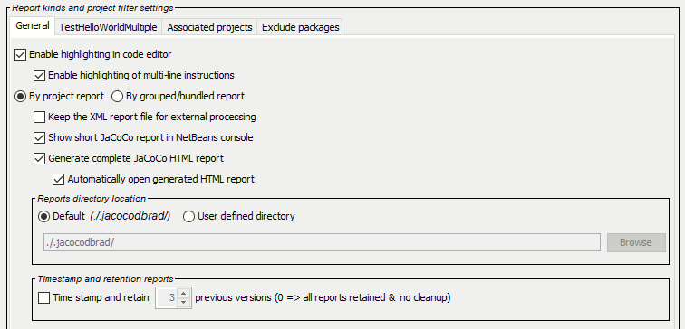
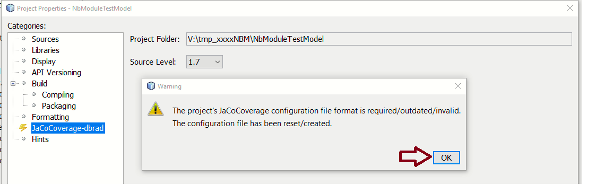
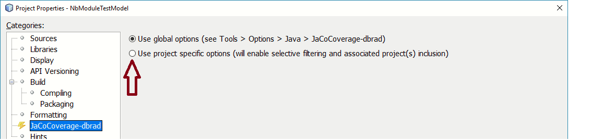
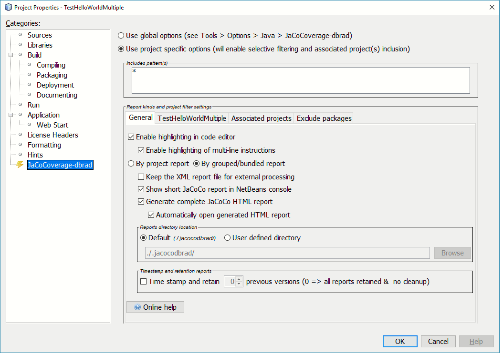
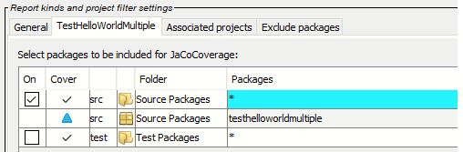
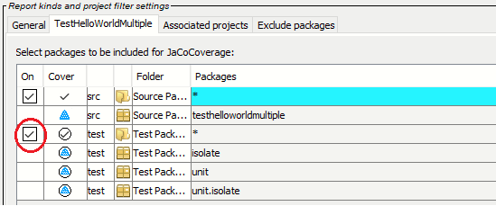

Description of project-specific settings tabbed pane, and contents of, when selected in a principle-project's project-properties > JaCoCoverage-dbrad dialog. A principle-project is displayed in the IDEs project/file-view and is the item selected.
Project specific settings is basically creating a singular-pseudo-profile for a specific principle-project. Any changes to the settings affects and changes the profile explicitly.
dbrad-jacocoverage is a category of a principle projects project-properties dialog with its own settings pane.
NOTE: settings pane is wider/taller than the average category
ENSURE TO RESIZE, to see all fields
Project specific is set explicitly on a principle-project (users choice) and its settings will override any dbrad-jacocoverage IDE global settings. Initial settings are inherited from the global settings, or from preserved settings (on-record in the config-directory). The latter preservation occurs if a user switches between project-specific & global settings, then back to project-settings.
Project-specific settings allow:
- Associated Netbeans projects are depends-on library projects or in Netbeans terms sub-projects.
Set in a project's project-properties dialog:
{project/file-view right click} > properties
Select from the categories tree JaCoCoverage-dbrad
A dialog MAY pop up to inform the user that a 'JaCoCoverage configuration' is required/outdated/invalid. Just select OK. This creates a '.jacocodbrad' folder in a principle-project's root-directory which is advised to be set ignored for any source-code-manager/version-control-source systems.
Set as project specific setting by selecting the appropriate radio button
There are two kinds of representations, as per the principle-projet kind:
|
Project specific display with the General tab showing is the same for either kind of project representation.  |
All projects (single or multiple) share the same tabs and settings apply equally. The tabs represent settings for features/capabilities that are applied for any code coverage requests. Settings are preserved in the {project}/.jacocodbrad directory of a principle-project, so the settings are reused for every code coverage run. Only a single active pseudo-profile is supported at a time.
NOTE: changing settings manually in any {project}/.jacocodbrad} files may result in unpredictable behavior, or exceptions.
Project specific parts
|
There are two parts to the settings when in the project specific panel:
|
Displays the includes packages pattern(s) that the code coverage will collect data for. The field is calculated from settings in the '{project}' & 'Associated projects' tabs.
Settings in the "Exclude packages" tab will not be included/applied in the information field as the excludes are applied 'after' code coverage capture.
This tab has the same settings as global dbrad-jacocoverage
IDE settings along with additional capability. The project-specific
settings will override
global IDE settings at
Tools > Options > Java > jacocoverage-dbrad
The same settings as the global-settings exist, but have expanded the scope of capability.
Other settings activate additional capabilities to:
Source file hi-lighting
On completion of coverage capture annotate source-code files with color high-lighting across the code lines.
Report control settings
The reports for each project will be generated as "separate" folder sets all relating to a project, or depends-on/associate project library that the principle-project uses.
See Console by-project, or HTML by-project report descriptions.
The reports for all projects will be generated as a "single" folder including the principle-project and any depends-on/associate project library projects.
See Console by-grouped/bundled, or HTML by-grouped/bundled report descriptions.
The coverage captures data is processed internally from a binary form to an XML file. The XML file is then used to further process into console/HTML reports.
The default OFF: deletes the XML report after creation of any console/HTML reports.
The purpose of this setting is to allow users to extract/copy the XML-file for their own post-processing of data from raw information.
Create a report in the Netbeans console (output view).
Create an HTML report into the default report directory ( {project}/.jacocodbrad/reportDir/ ).
OR, into the user-defined directory location, if set.
HTML browsers have limits as to the file path of HTML file being displayed correctly. This happens due to browser-and-platform file path limitations. (See Browser reporting error condition.)
After the HTML is generated, open the report with the local default browser automatically.
not all browsers support automatic launching from Java.
Reports directory location
Set for reports and workspace in the default at: {project}/.jacocodbrad/reportDir
Use a user defined location/directory for storing reports into. Will need to complete the text field below.
A directory chooser dialog may popup to assist in defining a location/directory.
Path to a location/directory where reports are to be stored. The Browse may be used to fill in the location.
Timestamp and retention reports
Create/save reports into a time-stamped directory
( as per 'default' or 'user-defined' directory location.
The time-stamped directory name will be:
.../ts_yyyymmdd_hhmmss_ms_reportDir/.....
The number of reports that will be retained in time stamp
format directory/file names. As newer reports are generated
older reports will be cleaned-up so only N versions are retained.
0 => all reports are retained with no cleanup.
DEFAULT: 3 versions retention pattern.
Modify this tab to add/subtract source-folders for 'source' and/or 'test' source-code of the principle-project. Further refine which packages to cover for inclusion by setting the 'cover' columns settings.
{project}: is the project's name as displayed in the project-view.
DEFAULT: include only the source-folder(s) for the principle-project coverage. With the 'all packages' condition applied. Any associated projects will not be included.
The following image can be played to demonstrate some basics in changing 'on', 'cover' setting changes and use of the 'Exclude packages' tab.
Play demo
Modify tab contents to set inclusion coverage for an associated-project in reports and collection of coverage. Each associated-project has its own sub-tabbed-pane and functions in the same manner as a "{project} tab", but for the associated-project.
DEFAULT: is associated-projects are un-selected from inclusion in coverage upon initial setup.
Associate projects are shown in a sub-tabbed-pane where each tab is an associate/sub-project of the principle-project. The layout and operation of a sub-tab is the same table format as the principle-project tab table.
Play demo
The table column headings are: On, Cover, [source folder type], [icon], Folder and Packages as described following ( [xyz] represent a none labeled heading).
Default and initial setting only make the principle-project source-code folders inclusive.
Test-source-code and associated-projects need to be explicitly included through settings beyond the initial settings.
| column heading | description | ||||||||||||||||||
|---|---|---|---|---|---|---|---|---|---|---|---|---|---|---|---|---|---|---|---|
On top change/toggleclick or space if cell focused cell focus tab next shift+tab previous |
Only appears for the source-code/test-source-code folder rows and applies the ON or OFF condition against the packages within the source-code/test-source-code folder.
|
||||||||||||||||||
Cover change/toggleclick or space if cell focused cell focus tab next shift+tab previous |
Controls the package included/covered state for the package the row represents. The symbols have two flavors representing the state and representing a state but affected-by another source-folder settings. As multiple source-folders can be included, their
package patterns may overlay each other:
|
||||||||||||||||||
[source-code |
A text indicator as to what kind of folder is being represented, either source-code or test-source-code directories.
|
||||||||||||||||||
[icon] |
An icon representing a folder or package row. |
||||||||||||||||||
Folder |
The name of the source-code/test-source-code folder as defined in the 'project-properties > Sources' category dialog. |
||||||||||||||||||
Packages popup-menuright-click or space if cell focused cell focus tab next shift+tab previous |
The string of a package within its folder, with a background color to indicated any affecting or affected-by conditions on the package. The field contains a string of the package in the form: 'pack1[.pack2[.pack3[- - -]]]]' OR '*' for all packages
|
||||||||||||||||||
Modify contents to create an exclude list to be applied to any coverage request. Settings in this tab are separate from the 'Includes pattern(s)' field, to avoid unnecessary collision in include/exclude determination. (Basically, excludes are applied after inclusion completes processing.)
DEFAULT: blank.
The 'Exclude packages' tab is a table of packages to be excluded from coverage and reports. A list of patterns is extracted from the table and provided to the jacocoagent request on processing. Dbrad-coverage does not process excludes patterns except as to provide the patterns (optimized) for jacocoagent and at making of reports (console, HTML, XML).
EXCLUDE PATTERNS are NOT PART OF INCLUDES PATTERN(S) field.
The following image is a play-able image to demonstrate most of the usage of the exclude packages table.
Play demo
| Add | Enter a valid package into field beside the button, then select button to
set. Invalid package entries will result in a message explaining issue.
The package string format |
| Remove | Select item in table, then select button to remove. |
|
org.testng.* org.junit.* junit.* (extension,..) |
Check box items cause exclusion of the most common test frameworks. For most coverage requests excluding test frameworks is typical. DEFAULT: all set. |
| column heading | description | ||||||
|---|---|---|---|---|---|---|---|
Apply change/toggleclick or space if cell focused cell focus tab next shift+tab previous |
Indicates exclude package is to be used for processing jacocoagent request.
|
||||||
Exclude packages |
The exclude package pattern.
|